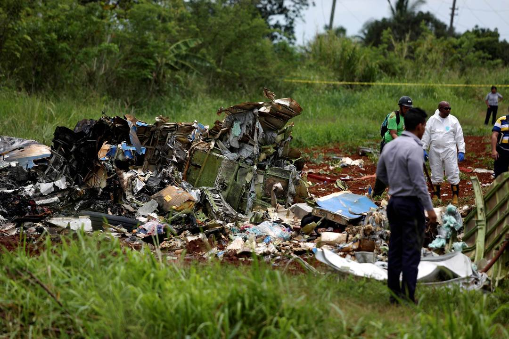

Queda de avião após decolagem no aeroporto de Havana mata mais de 100, diz TV estatal
Boeing 737 caiu logo após decolagem na capital de Cuba; há 3 sobreviventes mulheres em estado crítico, segundo a imprensa oficial

Equipes de resgate trabalham no local onde um avião com 113 pessoas a bordo caiu logo após decolagem em Havana, Cuba (Foto: Alexandre Meneghini/Reuters)Leia mais
Aluno atira dentro de sala de aula e mata 10 pessoas em escola no Texas
Nove alunos e um professor morreram, segundo emissora de TV. Polícia deteve como suspeito Dimitrios Pagourtzis, de 17 anos, ex-integrante do time de futebol da escola e parte da equipe de dança de uma Igreja Grega Ortodoxa local.
Choque de estudante após tiroteio em escola no Texas (Foto: Michael Ciaglo/AP)Leia mais